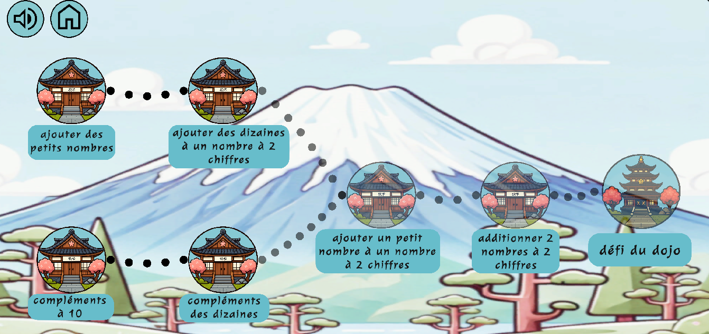
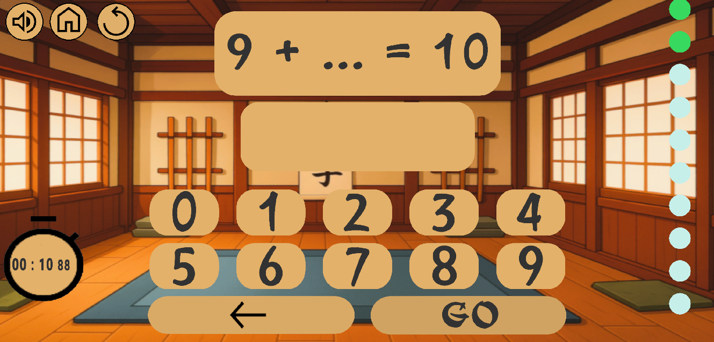
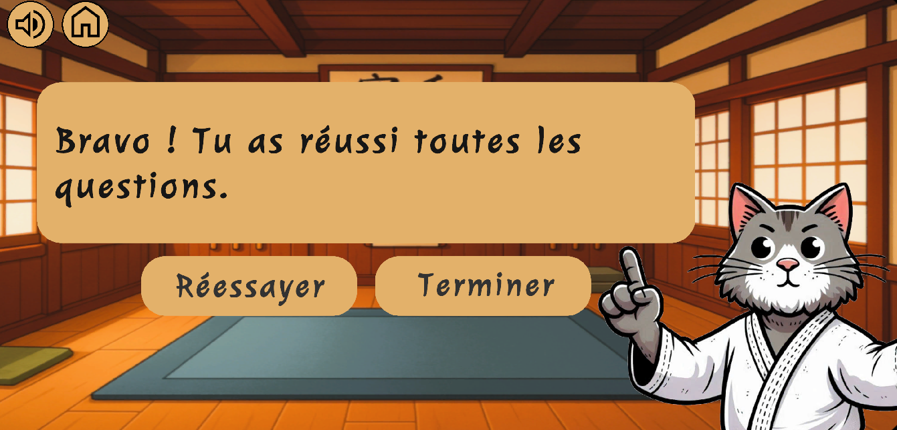
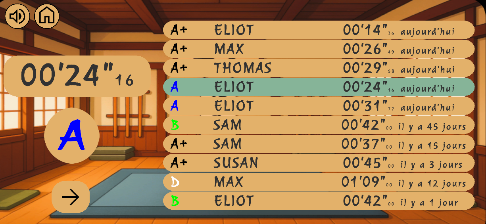
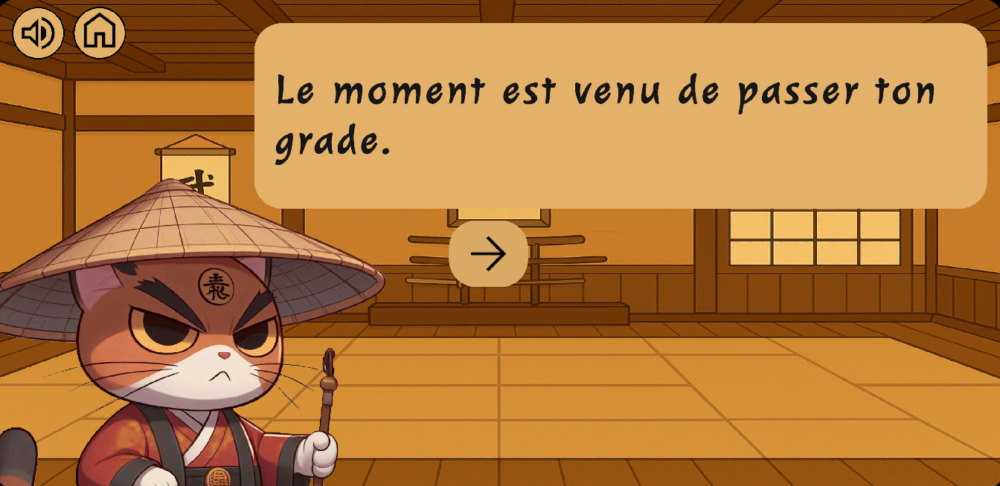
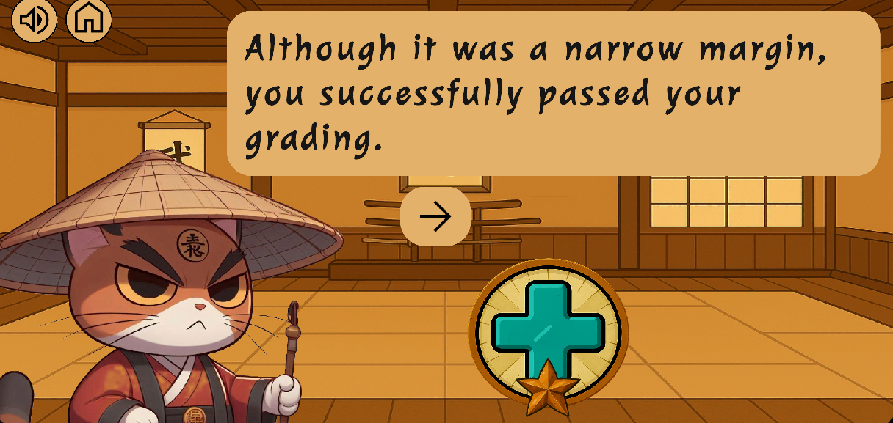

Katamath est un jeu éducatif destiné aux enfants pour s'entraîner au calcul mathématique, disponible en ligne.






À propos du développeur
Je suis Vincent, actuellement basé à Sophia Antipolis. J'ai étudié l'informatique et les mathématiques, et travaille depuis plus de 15 ans dans le développement logiciel.